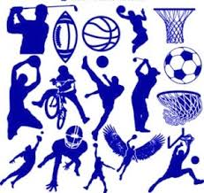

Kedves Hölgyek és Urak!Juhász Balázs vagyok és a következő pár sorban leírom milyen vagyok.
Rólam
Budapestszülettem 2001.08.25.-én Bp. Magyarország fővárosa rengeteg nevezetesség található. Talán a Parlament a leghíresebb nevezetessége az országnak.Mióta megszülettem Budapesten élek. Egyke vagyok.Szertek sportolni de csak a labdajátékban vagyok igazán jó.Kevés ismerősöm van, mert visszahúzodó típus vagyok.Szeretem az internetes játékokat.
Mint például:
Ezekben a játékokban tudok játszani távoli ismerőseimmel. És fejlesztik a reflexeimet.
